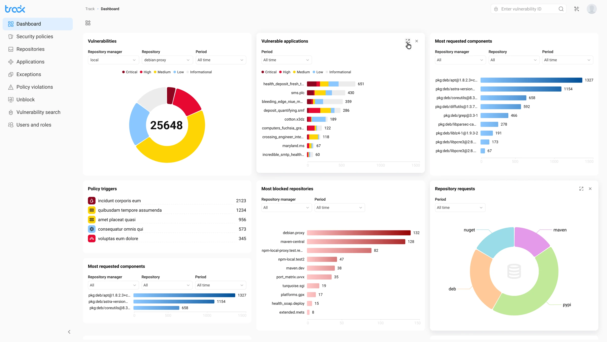
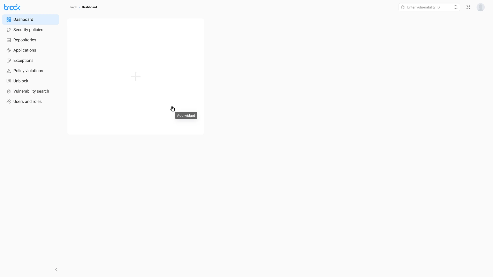
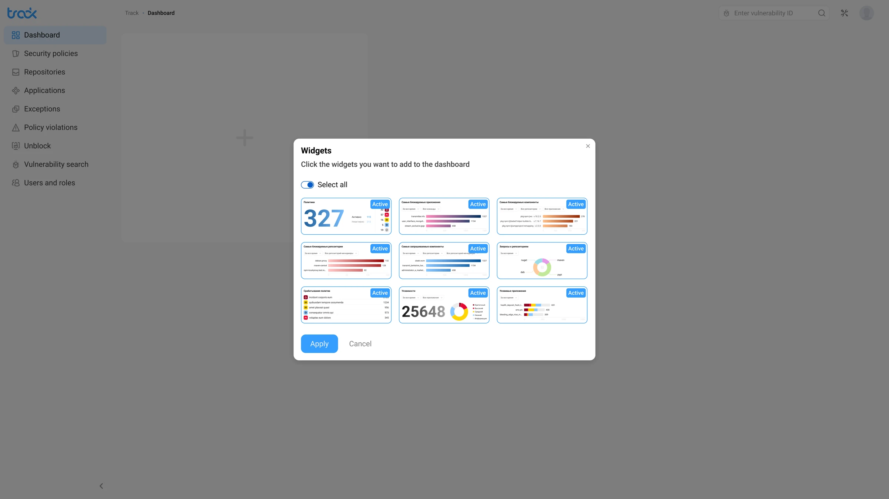
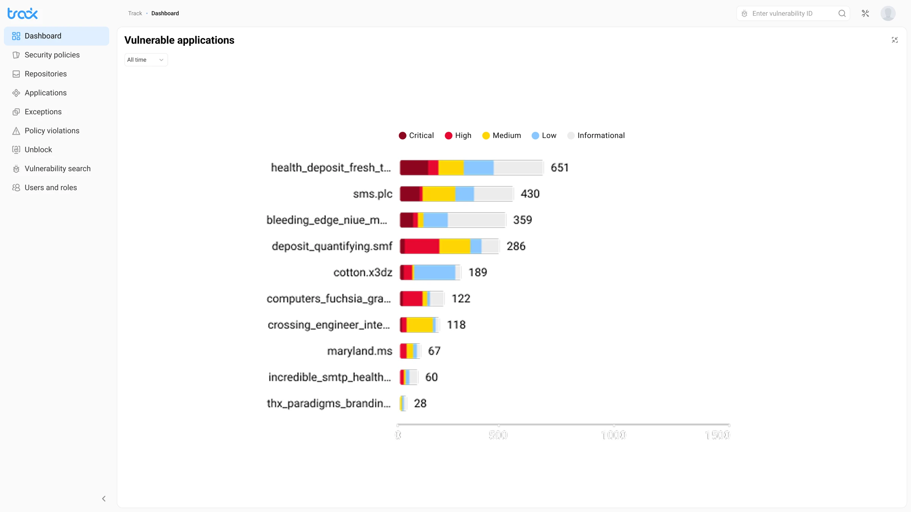

Track: дашборд безопасностиHow I built a security dashboard where each of three roles sets up their own analytics in a minute
Виджетный security-дашборд: каждая роль собирает свой обзор и уходит в детали, не теряя общей картины.Track is made of widgets: DevOps engineers, security analysts and managers each build the analytics they need.
- Role
- Sole designer, from role scenarios to handoff
- Team
- 9 people: me (designer), PM, analyst, 2 frontend developers, 2 backend developers, 2 QA
- Product
- AppSec Solutions, cybersecurity, B2B SaaS, web
- Result
- ≈ 1 minute to set up your own analytics for your role; 3 roles work from one dashboard
Context
Security-команды работали с разными первыми вопросами:Security teams had different first questions:
- DevOps следил за репозиториями,DevOps engineers watched the repositories;
- AppSec-аналитик — за severity и приложениямиsecurity analysts watched severity and applications;
- менеджер — за политиками и нарушениямиmanagers watched policies and violations.
Один статичный дашборд не мог обслужить всех: одним ролям он давал шум, другим — слепые зоны, и каждая команда всё равно доставала нужные метрики вручную или шла за ними к соседям.A single static dashboard gave some roles too much noise and left others with blind spots.
Design challenge
Нужно было дать пользователю контроль над обзором, но не превращать настройку в сложный конфигуратор. Empty state должен вести к первому действию, а widget picker объяснять выбор до применения.Give everyone control over their own analytics without turning setup into a configurator.
Research
Analysts brought in requests, and we tested solutions with internal users:
- Clickable prototypes: how roles set up their analytics from an empty screen.
- A/B tests: we compared options before choosing the final one.
The takeaway: every role starts from a different first question.

Ключевые решенияKey decisions
Как организовать дашборд: по типам графиков или по ролевым вопросам.Role questions, not chart types. Выбрала строить обзор вокруг вопросов роли (severity, репозитории, политики), потому что у DevOps, аналитика и менеджера первый вопрос разный. Отбросила витрину графиков «на все случаи»: одним ролям она давала шум, другим — слепые зоны.DevOps, analysts and managers each start from a different question, and an all-purpose gallery of charts only added noise.
Настройка: полноценный конфигуратор или empty state с widget picker.A light widget picker, not a configurator. Выбрала лёгкий picker с превью и Select all — путь от пустого экрана к первому обзору занимает минуту. Отбросила сложный конфигуратор: он превращает старт в отдельную работу и отпугивает часть ролей ещё до первого обзора.You can set up your analytics in about a minute, while a configurator would put people off before they even start.
Детали: отдельная страница или expanded view на месте.Expand in place, not a separate page. Выбрала раскрывать виджет в детальный режим прямо в дашборде, с возвратом в один клик. Отбросила уход на отдельную страницу деталей: пользователь терял контекст общего обзора и «где я нахожусь».That way people never lose the big picture.
РешениеSolution
Empty state как точка старта, а не тупик:The empty dashboard as a starting point: пустой экран сразу предлагает действие: добавить виджет. Большая зона с «+» показывает, что здесь появится персональный обзор.it immediately offers to add a widget.

Widget picker: выбор с пониманием:A widget picker with previews: пикер показывает превью виджетов до подтверждения. Select all ускоряет старт, ручной выбор даёт контроль, active-бейджи показывают текущий набор.you see the result before confirming.

Populated dashboard: единый обзор безопасности:The populated dashboard: обзор собирает severity, уязвимые приложения, заблокированные репозитории и policy triggers. Цветовая система Critical/High/Medium/Low/Informational остаётся единой во всех виджетах.severity, applications, repositories and policies in one place.
Expanded view: детали без потери контекста:An expanded widget: виджет раскрывается в детальный режим со stacked bar chart, периодом и hover-state по severity. Вернуться к обзору можно одним кликом.a detailed chart without losing context and a one-click way back to the dashboard.

РезультатOutcome
- ≈ 1 минута собрать персональный обзор под роль≈ 1 minute to set up your own analytics for your role — empty state и widget picker ведут от пустого экрана к первому обзору без настройки-конфигуратора.with no configurator.
- 3 роли — один дашборд:3 roles in one dashboard: DevOps, аналитик и менеджер собирают нужные метрики в одном месте и перестают спорить, чей дашборд «правильный».each role builds its own metrics in one place.
- 5 уровней severity в единой системе:5 severity levels in one system: Critical / High / Medium / Low / Informational держат цвет одинаковым во всех виджетах, а новый виджет добавляется, не ломая остальные.the same colours in every widget, and a new widget doesn’t break the rest.
What I learned
A dashboard for several roles should answer each role’s first question rather than be a set of charts. And an easy start matters more than flexible configuration.